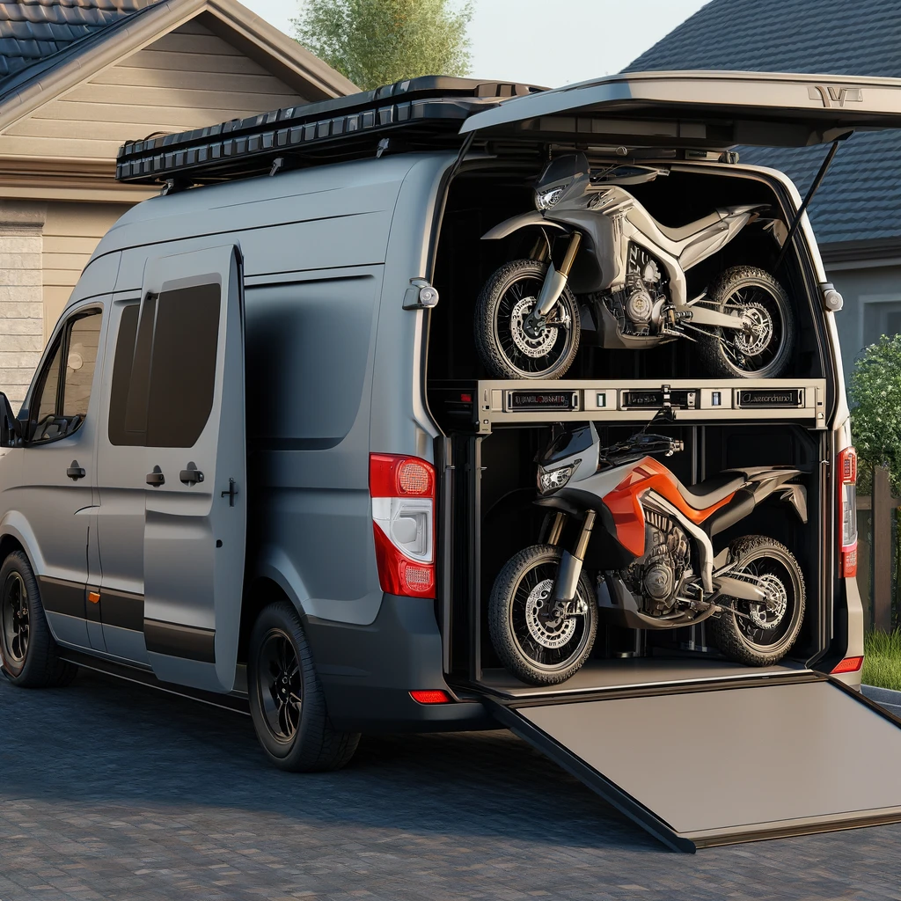
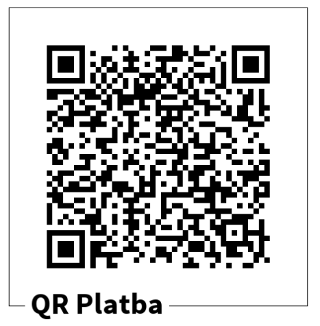
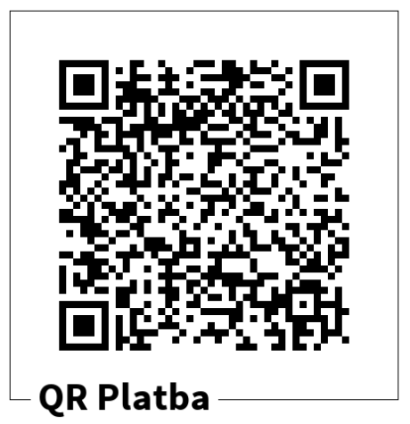
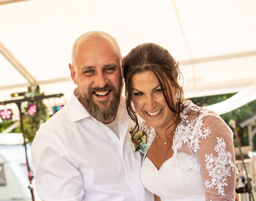

Rádi bychom vás přivítali na našem svatebním webu, kde naleznete ty nejdůležitější informace k našemu
významnému dni. Už se na vás všechny moc těšíme!
V první řadě si chceme tento pro nás významný den s vámi všemi užít. Tudíž chceme, aby se každý cítil dobře a
zvolil si oblečení na odpolední zábavu dle vašich představ,
jen na obřad bychom rádi slušnější oděv.
Obřad budeme mít na starém nevyužívaném letišti, ale přesto bychom vás rádi požádali, abyste se oblékli
slavnostně a slečny a ženy se vyhnuly bílým šatům, jak je na svatbách zvykem. Pokud si chcete
vzít podpatky, tak to v nich zvládnete.
Budeme se pohybovat buď po asfaltu nebo potom v kulturním domě a okolí.
Po obřadu bude následovat pár fotografíí. Nevěsta se v rychlosti převlékne a bude následovat "první tanec
nevěsty a ženicha". Další focení, natáčení a přesun do kulturního domu ve vesnici Březno.
Přesouvat se budeme buď na motorkách a nebo auty. V kulturním domě bude následovat jídlo, pití a zábava. Po
obřadu se můžete převléknout do čeho budete chtít. :-)
Dále prosíme, aby nikdo neunášel nevěstu. Nevěsta by si tento den ráda užila s vámi a ne někde čekat než si
ženich všimne, že se zrovna nikde nebaví s kamarádkami, ale že je vlastně pryč.
Děkujeme moc za pochopení a těšíme se na vás všechny. :-)
Svatba se koná přímo ve vesnici Březno, přislíbili jsme noční klid po 10 hodině večerní, takže prosíme, abyste po 22. hodině drželi zábavu uvnitř kulturního domu za zavřenými dveřmi a nikoli venku nebo v okolí stanů.
Děkujeme za Vaše pochopení a těšíme se na pohodovou svatbu.
Program
Je možné, že program ještě trochu upravíme, tak jej doporučujeme průběžně sledovat! A ještě se může i v průběhu svatby měnit. :-D Určitě se taky
můžete těšit na překvapení 😉
Příjezd hostů na letiště Březno
12:30
Obřad
13:00
Lehká stunt ridingová show novomanželů a přátel + focení
13:45
Přejezd z letiště do kulturního domu ve vesnici Březno
14:30
Raut a párty
14:35
Krájení dortu
16:00
První tanec
17:00
Večerní program
18:00
Kapela Schimpi Band
DJ
Důležitá místa
Obřad
Letiště Březno u Chomutova
431 44 Droužkovice
Své ano si řekneme na místě, kde trávíme hodiny a hodiny se svými motorkami. Po obřadu bude i malé ježdění.
Hostina
Kulturní dům Březno
Gen. Svobody 431, 431 45 Březno u Chomutova
Po obřadu a malém ježdění se přesuneme do Kulturního domu ve vesnici Březno. Tam již bude celý další program.
Spaní
Přespání jsme pro vás zařídilí trošku punkovějšího rázu, a proto necháme na vás, kdo toto přespání využije a kdo ne.
Domluvili jsme louku, která je hned vedle kulturního domu. Na louce bude možné si postavit stan a přespat v něm.
Je také možné tam spát pod širákem apod. Ve chvíli, kdy odejdeme všichni z kulturního domu, tak kulturní dům se musí zamknout,
ale budou otevřeny celou noc nově zrekonstruované veřejné záchody ihned vedle kulturního domu. Sprchy bohužel zajistit nedokážeme, tak to snad jednu noc zvládneme. ;-)
Samozřejmě je možné přespat i ve svém autě. Bohužel nevím, kolik přijede aut a kolik bude volných parkovacích míst, která jsou přímo přilehlá.
Tudíž prosím vyplňte do formuláře jak a v čem byste chtěli přespat a my podle toho zkusíme zařídit i bližší parkování pro spáče na místě.
V Březně bohužel není žádné ubytovací zařízení. Nejbližší hotely a penziony jsou v Chomutově. Budeme mít zařízený odvoz do Chomutova a okolí,
takže se nemusíte bát, že byste se nemohli dostat zpět na místo svého přespání, pokud byste se rozhodli zamluvit si hotel.
Vaše účast
Prosím o vyplnění krátkého dotazníku. Moc mi to pomůže s organizací a plánováním, abychom pro vás mohli udělat maximum.
Svatební dary
Svatebčané naši milí, dovolte nám prosbičku,
raději než věcné dary, naplňte nám kasičku.
Mnohokrát Vám děkujeme za každičký halíř,
stokrát lepší než nést domů stodesátý talíř.
Abychom vám to co nejvíce usnadnili, a navíc se rádi držíme s dobou, tak jsme pro vás vytvořili QR kódy pro platbu. Budou i na místě svatby.
Každopádně do poznámky platby nám můžete napsat cokoli. :-)
Na "rodinné" auto

Rádi bychom méně jezdili každý zvlášť svým autem a byli více spolu.
Případně i s malým přírůstkem by se nám hodilo auto, kde budu mít já s prckem zázemí a zároveň budu moci Kubu doprovázet na všech akcích.

Na svatební cestu
S Kubou jsme ještě na společné dovolené bez motorek na déle než jeden den nikde nebyli. Doufáme, že se nám to zadaří na naši společnou svatební cestu.

Důležití lidé
Rádi bychom vám představili osoby, které jsou naprosto úžasné a pomáhají nám s organizací svatby a v den svatby budou mít vše na starosti. Děkujeme moc Lucce a Zdendovi.
Každopádně před svatbou si většinu věcí zařizujeme sami, tak prosím pište případně mně. Ať nezatěžujeme Lucku a Zdendu, dokud to nebude nutné.
V den svatby již ideálně nic řešit nebudu. Děkuju moc za pochopení.
Lucie Lutovská Hanková & Zdeněk Lutovský

Lucie a Zdeněk jsou naši svatební koordinátoři. Mají vše na starosti v den svatby a hodně věcí nám pomáhájí zařizovat.
Děkujeme vám za pomoc a podporu.
E-mail: lucie.hankova@zsduhovacesta.cz
Kontakt
Pokud máte jakékoli dotazy a připomínky, tak prosím pište na email: info@katestunt.com